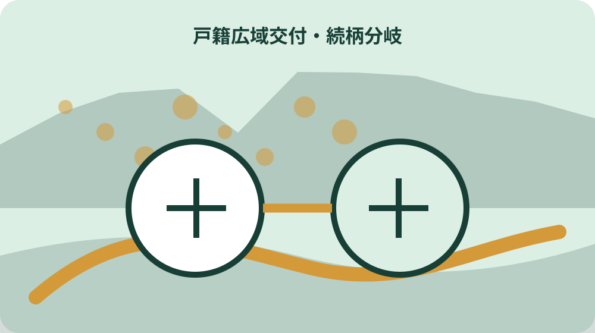
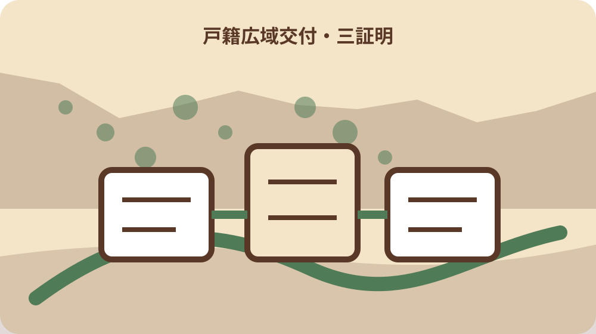

先に結論を確認する
この記事の答え：本籍地、必要な戸籍、請求者との続柄、窓口本人確認を一件ずつ分け、広域交付で取れるか判断したいため、対象、基準日、公式資料、未確認事項を最初の一行へ置きます。
森町で最初に照合する条件：森町公式の二つの異なる案内を2026-08-13に確認する
必要な戸籍を一件カードにする
『必要な戸籍を一件カードにする』を調べる場面では、必要な戸籍を一件カードにするでは、まず広域交付は2024年3月1日から本籍地以外の市区町村窓口でも請求できる制度です。『必要な戸籍を一件カードにする』を調べる場面では、この事実を出発点に、対象者・対象物・確認日を同じ行へ置きます。『必要な戸籍を一件カードにする』を調べる場面では、森町で戸籍証明を広域交付で取る前の請求判定表の判断を口頭だけで進めず、根拠となるページ名と更新日も併記してください。
『必要な戸籍を一件カードにする』を調べる場面では、公式案内の共通条件と、手元の個別事情を二列に分けます。『必要な戸籍を一件カードにする』を調べる場面では、広域交付は2024年3月1日から本籍地以外の市区町村窓口でも請求できる制度ですという根拠は左へ、必要な戸籍を一件カードにするでまだ調べる対象は右へ置き、ページ本文から読み取れない事情を補いません。
『必要な戸籍を一件カードにする』を調べる場面では、原資料の名称と確認日を記したら、数字・人名・物件番号を原文のまま転記します。『必要な戸籍を一件カードにする』を調べる場面では、広域交付と通常請求を分けるへ移る前に、森町へ尋ねる質問を一つだけ決め、回答欄を空けて待ちます。
『必要な戸籍を一件カードにする』を調べる場面では、この節は、対象が一意に決まり、根拠URLへ戻れ、次の担当が読める状態で終了です。『必要な戸籍を一件カードにする』を調べる場面では、必要な戸籍を一件カードにするに未確認があれば、結論欄ではなく再確認日の欄を埋めます。
『必要な戸籍を一件カードにする』を調べる場面では、1番目の確認として『必要な戸籍を一件カードにする』を保存するときは、根拠となる『広域交付は2024年3月1日から本籍地以外の市区町村窓口でも請求できる制度です』と今回の対象を一本の線で結びます。『必要な戸籍を一件カードにする』を調べる場面では、資料の写しには取得日、個別メモには記入者、問い合わせ結果には回答日を付け、次に読む人が公式事実と家族の判断を取り違えない状態にしてください。
広域交付と通常請求を分ける
『広域交付と通常請求を分ける』用の一件表に、手元の書類を開いたら、広域交付と通常請求を分けるに関係する名称、番号、日付を原文どおり写します。『広域交付と通常請求を分ける』用の一件表に、略称や家族の呼び名へ置き換える前に、全国各地に本籍がある戸籍も一か所の市区町村窓口でまとめて請求できますという公式案内と一致する欄を見つけることが重要です。
『広域交付と通常請求を分ける』用の一件表に、ここでは『全国各地に本籍がある戸籍も一か所の市区町村窓口でまとめて請求できます』を確認線にします。『広域交付と通常請求を分ける』用の一件表に、家族の記憶と公式記載が違うときは両方を残し、広域交付と通常請求を分けるの判断材料として同じ意味に丸めないでください。
『広域交付と通常請求を分ける』用の一件表に、書類の版、発行元、対象期間を余白へ書くと、後日の更新と区別できます。『広域交付と通常請求を分ける』用の一件表に、続く本人・配偶者・直系親族を確認するで必要になる資料だけを抜き出し、原本の束は崩さず保管します。
『広域交付と通常請求を分ける』用の一件表に、作業者は確認した日時と方法を署名代わりに残します。『広域交付と通常請求を分ける』用の一件表に、広域交付と通常請求を分けるの答えが出ない場合も、調査経路が見えるなら一段階は完了です。
『広域交付と通常請求を分ける』用の一件表に、2番目の確認として『広域交付と通常請求を分ける』を保存するときは、根拠となる『全国各地に本籍がある戸籍も一か所の市区町村窓口でまとめて請求できます』と今回の対象を一本の線で結びます。『広域交付と通常請求を分ける』用の一件表に、資料の写しには取得日、個別メモには記入者、問い合わせ結果には回答日を付け、次に読む人が公式事実と家族の判断を取り違えない状態にしてください。
本人・配偶者・直系親族を確認する
『本人・配偶者・直系親族を確認する』の対象について、この段階の要点は、広域交付の戸籍全部事項証明書は一通450円と森町が案内しています。『本人・配偶者・直系親族を確認する』の対象について、対象外かもしれない情報まで結論に混ぜず、確認できた範囲を枠で囲みます。『本人・配偶者・直系親族を確認する』の対象について、次の窓口へ渡す際は、何を見て判断したかが一目で戻れる形にします。
『本人・配偶者・直系親族を確認する』の対象について、本人・配偶者・直系親族を確認するの判断は制度名ではなく対象の一致で行います。『本人・配偶者・直系親族を確認する』の対象について、広域交付の戸籍全部事項証明書は一通450円と森町が案内していますを参照しつつ、氏名・住所・年月・設備位置のうち記事に必要な識別子だけを確認票へ写します。
『本人・配偶者・直系親族を確認する』の対象について、窓口へ伝える文章は、現状、知りたいこと、持参できる資料の順に組み立てます。『本人・配偶者・直系親族を確認する』の対象について、兄弟姉妹の戸籍は同じ扱いにしないへ渡す値を一つに絞ると、質問が別制度へ広がりません。
『本人・配偶者・直系親族を確認する』の対象について、確認済みには根拠資料、対象外には理由、未確認には連絡先を付けます。『本人・配偶者・直系親族を確認する』の対象について、三つの欄が埋まれば、本人・配偶者・直系親族を確認するを家族へ引き継げます。
『本人・配偶者・直系親族を確認する』の対象について、3番目の確認として『本人・配偶者・直系親族を確認する』を保存するときは、根拠となる『広域交付の戸籍全部事項証明書は一通450円と森町が案内しています』と今回の対象を一本の線で結びます。『本人・配偶者・直系親族を確認する』の対象について、資料の写しには取得日、個別メモには記入者、問い合わせ結果には回答日を付け、次に読む人が公式事実と家族の判断を取り違えない状態にしてください。
兄弟姉妹の戸籍は同じ扱いにしない
『兄弟姉妹の戸籍は同じ扱いにしない』へ進む前に、兄弟姉妹の戸籍は同じ扱いにしないを実行するときは、公式案内にある『除籍全部事項証明書と改製原戸籍謄本は広域交付で各一通750円です』を基準にします。『兄弟姉妹の戸籍は同じ扱いにしない』へ進む前に、手続名が似ていても目的や起算日が違うため、一件の記録へ詰め込まず、証明・申請・現地確認を別行で管理します。
『兄弟姉妹の戸籍は同じ扱いにしない』へ進む前に、『除籍全部事項証明書と改製原戸籍謄本は広域交付で各一通750円です』は全員に同じ結果を保証する文ではありません。『兄弟姉妹の戸籍は同じ扱いにしない』へ進む前に、兄弟姉妹の戸籍は同じ扱いにしないでは、公式条件に自分の対象が当てはまるかを一項目ずつ照合します。
『兄弟姉妹の戸籍は同じ扱いにしない』へ進む前に、期限が見える資料には取得日も添えます。『兄弟姉妹の戸籍は同じ扱いにしない』へ進む前に、次の取得できる証明三種類を選ぶで古い数字を再利用しないよう、確認時点を日付で囲んでください。
『兄弟姉妹の戸籍は同じ扱いにしない』へ進む前に、この場で決められない個別条件は窓口確認へ回します。『兄弟姉妹の戸籍は同じ扱いにしない』へ進む前に、兄弟姉妹の戸籍は同じ扱いにしないを推測で完了扱いにせず、回答者と回答日まで入った時点で確定にします。
『兄弟姉妹の戸籍は同じ扱いにしない』へ進む前に、4番目の確認として『兄弟姉妹の戸籍は同じ扱いにしない』を保存するときは、根拠となる『除籍全部事項証明書と改製原戸籍謄本は広域交付で各一通750円です』と今回の対象を一本の線で結びます。『兄弟姉妹の戸籍は同じ扱いにしない』へ進む前に、資料の写しには取得日、個別メモには記入者、問い合わせ結果には回答日を付け、次に読む人が公式事実と家族の判断を取り違えない状態にしてください。

取得できる証明三種類を選ぶ
『取得できる証明三種類を選ぶ』の資料欄には、取得できる証明三種類を選ぶでは、まず請求できる人には本人、配偶者、直系尊属、直系卑属が含まれます。『取得できる証明三種類を選ぶ』の資料欄には、この事実を出発点に、対象者・対象物・確認日を同じ行へ置きます。『取得できる証明三種類を選ぶ』の資料欄には、森町で戸籍証明を広域交付で取る前の請求判定表の判断を口頭だけで進めず、根拠となるページ名と更新日も併記してください。
『取得できる証明三種類を選ぶ』の資料欄には、まず請求できる人には本人、配偶者、直系尊属、直系卑属が含まれますを確認票の見出し下へ引用せず要約します。『取得できる証明三種類を選ぶ』の資料欄には、その下に取得できる証明三種類を選ぶの対象番号を置けば、一般案内と今回の一件を混同しにくくなります。
『取得できる証明三種類を選ぶ』の資料欄には、写真や画面保存には撮影方向・取得日・ページ名を付けます。『取得できる証明三種類を選ぶ』の資料欄には、顔写真付き本人確認書類を用意するで照合するとき、同名の別資料を開いても違いを見つけられます。
『取得できる証明三種類を選ぶ』の資料欄には、確認済みの記録を付ける前に、別の家族が同じ対象へ到達できるか試します。『取得できる証明三種類を選ぶ』の資料欄には、迷った箇所は取得できる証明三種類を選ぶの備考へ戻し、判断語を削ります。
『取得できる証明三種類を選ぶ』の資料欄には、5番目の確認として『取得できる証明三種類を選ぶ』を保存するときは、根拠となる『請求できる人には本人、配偶者、直系尊属、直系卑属が含まれます』と今回の対象を一本の線で結びます。『取得できる証明三種類を選ぶ』の資料欄には、資料の写しには取得日、個別メモには記入者、問い合わせ結果には回答日を付け、次に読む人が公式事実と家族の判断を取り違えない状態にしてください。
顔写真付き本人確認書類を用意する
『顔写真付き本人確認書類を用意する』を照合するとき、手元の書類を開いたら、顔写真付き本人確認書類を用意するに関係する名称、番号、日付を原文どおり写します。『顔写真付き本人確認書類を用意する』を照合するとき、略称や家族の呼び名へ置き換える前に、父母の戸籍から除籍した兄弟姉妹の戸籍は広域交付では請求できませんという公式案内と一致する欄を見つけることが重要です。
『顔写真付き本人確認書類を用意する』を照合するとき、顔写真付き本人確認書類を用意するで扱う公式事実は『父母の戸籍から除籍した兄弟姉妹の戸籍は広域交付では請求できません』です。『顔写真付き本人確認書類を用意する』を照合するとき、これに該当しない家族事情や現場状態は、別紙の個別確認欄へ移して根拠の種類を分けます。
『顔写真付き本人確認書類を用意する』を照合するとき、原本、写し、ウェブ画面は証拠力も更新方法も違います。『顔写真付き本人確認書類を用意する』を照合するとき、郵便・代理・第三者請求を外すへ進む際は、どの媒体を見たかまで記録してください。
『顔写真付き本人確認書類を用意する』を照合するとき、対象、時点、資料、次の連絡先が四点とも読めればこの節を閉じます。『顔写真付き本人確認書類を用意する』を照合するとき、顔写真付き本人確認書類を用意するの結論だけを書いたメモは引継ぎ資料にしません。
郵便・代理・第三者請求を外す
『郵便・代理・第三者請求を外す』の質問票で、この段階の要点は、広域交付では委任状による代理請求、郵便請求、第三者請求ができません。『郵便・代理・第三者請求を外す』の質問票で、対象外かもしれない情報まで結論に混ぜず、確認できた範囲を枠で囲みます。『郵便・代理・第三者請求を外す』の質問票で、次の窓口へ渡す際は、何を見て判断したかが一目で戻れる形にします。
『郵便・代理・第三者請求を外す』の質問票で、資料上の条件を先に固定します。『郵便・代理・第三者請求を外す』の質問票で、今回は広域交付では委任状による代理請求、郵便請求、第三者請求ができませんが基準なので、郵便・代理・第三者請求を外すに関係する手元資料へ同じ用語があるかを探します。
『郵便・代理・第三者請求を外す』の質問票で、用語が一致しないときは勝手に言い換えず、双方の名称を並記します。『郵便・代理・第三者請求を外す』の質問票で、紙戸籍など対象外を記録するの窓口質問には、その差を短く添えます。
紙戸籍など対象外を記録する
『紙戸籍など対象外を記録する』の期限管理では、紙戸籍など対象外を記録するを実行するときは、公式案内にある『窓口本人確認には顔写真付き身分証明書の提示が必要です』を基準にします。『紙戸籍など対象外を記録する』の期限管理では、手続名が似ていても目的や起算日が違うため、一件の記録へ詰め込まず、証明・申請・現地確認を別行で管理します。
『紙戸籍など対象外を記録する』の期限管理では、窓口本人確認には顔写真付き身分証明書の提示が必要ですという案内から、今回確認すべき欄だけを抽出します。『紙戸籍など対象外を記録する』の期限管理では、紙戸籍など対象外を記録すると無関係な制度説明まで転記すると重要な差が埋もれるため、採用理由も一言添えます。
『紙戸籍など対象外を記録する』の期限管理では、数字は単位と起算点を離しません。『紙戸籍など対象外を記録する』の期限管理では、全国の本籍地を一窓口へまとめるへ数値を渡すときは、誰の、何の、いつの数字かを一行で説明します。
全国の本籍地を一窓口へまとめる
『全国の本籍地を一窓口へまとめる』を家族で見るなら、全国の本籍地を一窓口へまとめるでは、まずコンピュータ化されていない紙戸籍は広域交付の対象外です。『全国の本籍地を一窓口へまとめる』を家族で見るなら、この事実を出発点に、対象者・対象物・確認日を同じ行へ置きます。『全国の本籍地を一窓口へまとめる』を家族で見るなら、森町で戸籍証明を広域交付で取る前の請求判定表の判断を口頭だけで進めず、根拠となるページ名と更新日も併記してください。
『全国の本籍地を一窓口へまとめる』を家族で見るなら、この節の根拠はコンピュータ化されていない紙戸籍は広域交付の対象外ですです。『全国の本籍地を一窓口へまとめる』を家族で見るなら、全国の本籍地を一窓口へまとめるでは、公式の対象範囲と実物の状態を別の色で記し、資料だけで現地確認を済ませません。
『全国の本籍地を一窓口へまとめる』を家族で見るなら、問い合わせで得た回答は、質問文と組にして保存します。『全国の本籍地を一窓口へまとめる』を家族で見るなら、手数料と必要通数を確定するに関する別回答と混ざらないよう、担当部署も同じ行へ置きます。

手数料と必要通数を確定する
『手数料と必要通数を確定する』の更新確認時に、手元の書類を開いたら、手数料と必要通数を確定するに関係する名称、番号、日付を原文どおり写します。『手数料と必要通数を確定する』の更新確認時に、略称や家族の呼び名へ置き換える前に、通常請求では同じ戸籍にいない兄弟姉妹について委任状が必要な場合がありますという公式案内と一致する欄を見つけることが重要です。
『手数料と必要通数を確定する』の更新確認時に、手数料と必要通数を確定するの入口では、通常請求では同じ戸籍にいない兄弟姉妹について委任状が必要な場合がありますを現在の公式条件として採用します。『手数料と必要通数を確定する』の更新確認時に、過去の案内を持つ場合は上書きせず、旧版として横へ残してください。
『手数料と必要通数を確定する』の更新確認時に、更新差を見つけたら、実行予定日より前に窓口へ確認します。『手数料と必要通数を確定する』の更新確認時に、大石の視点：取れない理由を残すの作業日は、回答後に決める方が手戻りを減らせます。
大石の視点：取れない理由を残す
『大石の視点：取れない理由を残す』という実務提案では、この段階の要点は、権利行使や義務履行による通常請求では必要理由を具体的に明らかにします。『大石の視点：取れない理由を残す』という実務提案では、対象外かもしれない情報まで結論に混ぜず、確認できた範囲を枠で囲みます。『大石の視点：取れない理由を残す』という実務提案では、次の窓口へ渡す際は、何を見て判断したかが一目で戻れる形にします。
『大石の視点：取れない理由を残す』という実務提案では、公的事実と私の提案を混ぜません。『大石の視点：取れない理由を残す』という実務提案では、権利行使や義務履行による通常請求では必要理由を具体的に明らかにしますは資料で確認できる内容であり、大石の視点：取れない理由を残すを一行管理する方法は私、大石浩之の実務提案です。
『大石の視点：取れない理由を残す』という実務提案では、提案は森町や所管機関の公式見解ではありません。『大石の視点：取れない理由を残す』という実務提案では、窓口へ渡す請求判定表を完成するへ進む順序も個別事情で変わるため、担当窓口の回答を優先します。
窓口へ渡す請求判定表を完成する
『窓口へ渡す請求判定表を完成する』の最終点検として、窓口へ渡す請求判定表を完成するを実行するときは、公式案内にある『法務省は戸籍証明書の広域交付を戸籍法改正による全国制度として案内しています』を基準にします。『窓口へ渡す請求判定表を完成する』の最終点検として、手続名が似ていても目的や起算日が違うため、一件の記録へ詰め込まず、証明・申請・現地確認を別行で管理します。
『窓口へ渡す請求判定表を完成する』の最終点検として、最後に法務省は戸籍証明書の広域交付を戸籍法改正による全国制度として案内していますをもう一度原資料で照合します。『窓口へ渡す請求判定表を完成する』の最終点検として、窓口へ渡す請求判定表を完成するの記録が制度の説明だけになっていないか、今回の対象を示す番号や日付があるかを確認してください。
『窓口へ渡す請求判定表を完成する』の最終点検として、必要な戸籍を一件カードにするへ引き継ぐ資料は、最新版、旧版、個別証拠の三束に分けます。『窓口へ渡す請求判定表を完成する』の最終点検として、紛失防止のため保管場所とファイル名も一覧へ入れます。